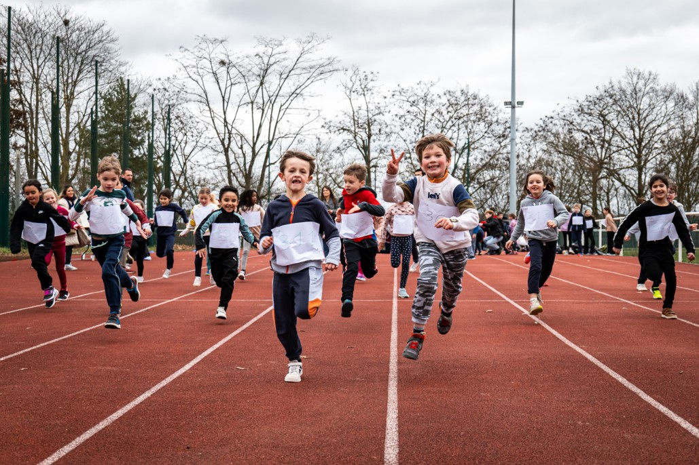
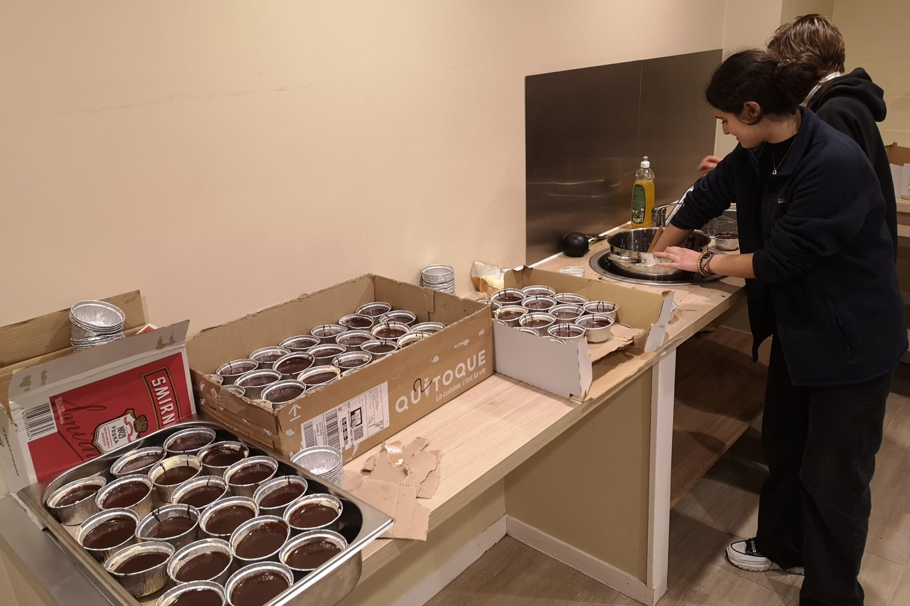
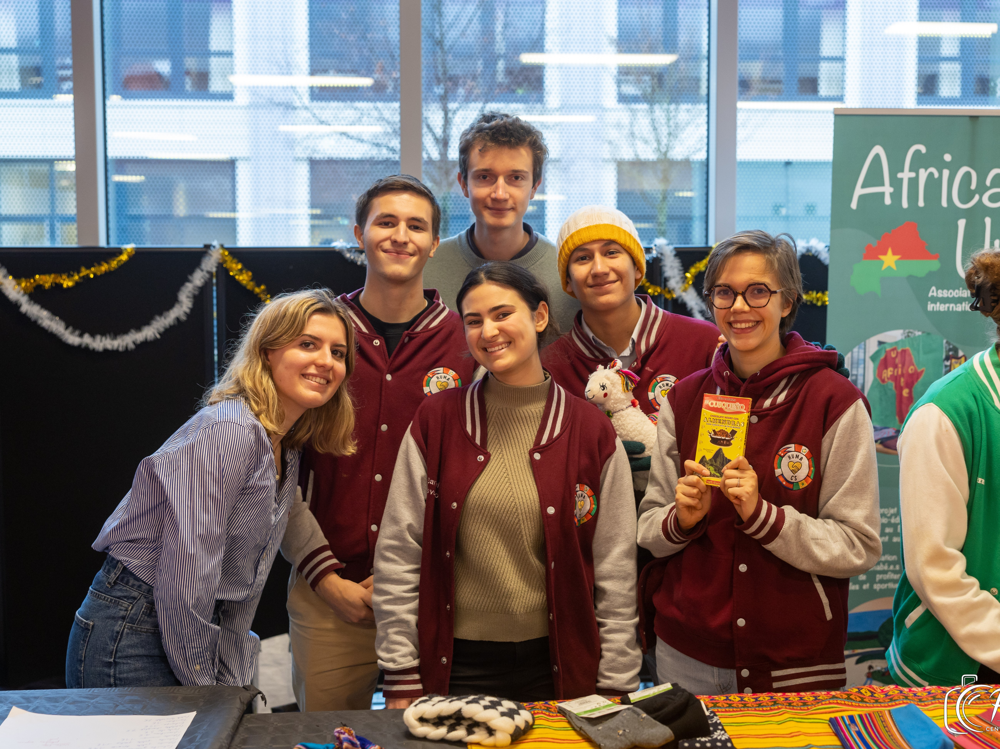
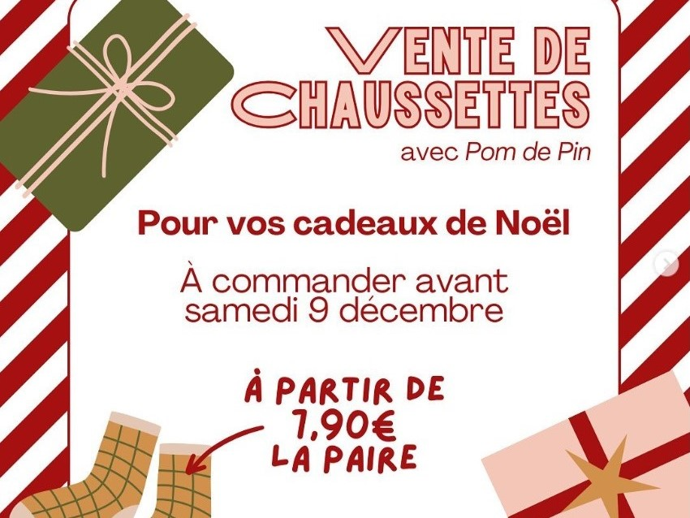
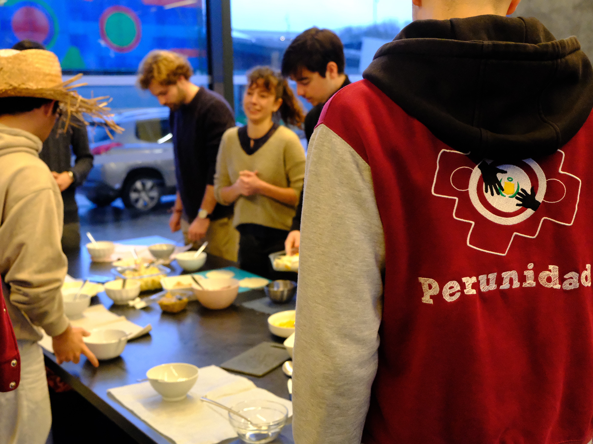

Nos actions principales

La course de solidarité est notre action phare en dehors du campus. A travers celle-ci, nous voulons impliquer les enfants dans des actions solidaires au travers d’activités sportives, culturelles, artistiques et culinaires. Cette action nous permet de financer nos projets en organisant des activités ludiques et éducatives.
En savoir plus
Les MiCuiCS au chocolat sont une des actions phares de Perunidad. Concept lancé pendant le confinement afin de remonter le moral des étudiants, nous avons perpétué la tradition en cuisinant puis en livrant près de 1200 mi-cuits sur le campus par an.
De quoi régaler les adeptes du chocolat et y convertir certains !
Regarder la vidéoNos autres actions

Nous avons participé cette année au marché de Noël organisé au sein de notre école par la Winter Association CentraleSupélec.
L’occasion parfaite pour proposer aux élèves des produits locaux achetés au Pérou ! Entre bonnets, gants et pulls faits main, ainsi que du chocolat péruvien, les cadeaux de Noël étaient tout trouvés !

Quand l’hiver bat son plein sur le campus de CentraleSupélec, nous organisons une vente de chaussettes en collaboration avec Pom de Pin. Que ce soit pour un cadeau de Noël ou pour se réchauffer, chacun trouve chaussette à son pied !

Nous avons décidé de faire découvrir aux étudiants de notre école une spécialité d’Amérique latine : les empenadas. Pendant des ateliers cuisine, nous avons pu leur partager des recettes traditionnelles que les étudiants ont pu mettre en œuvre. Un régal assuré !